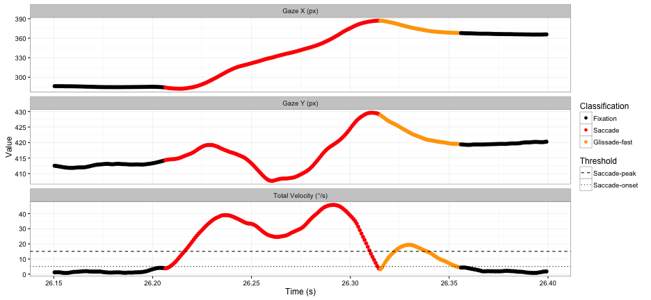
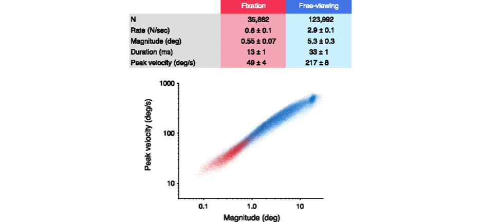
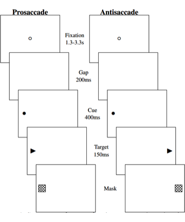
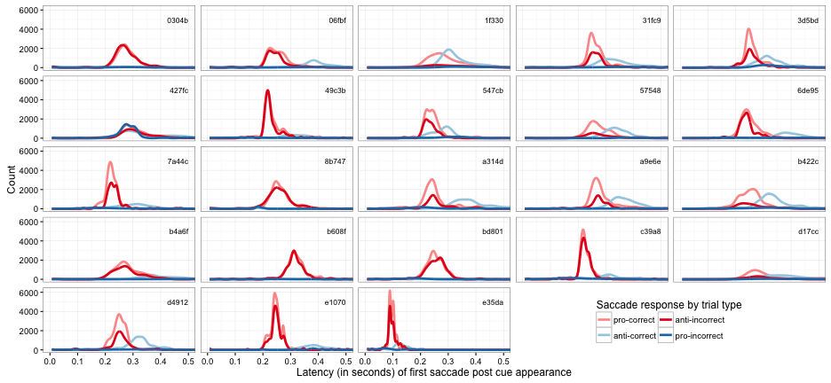
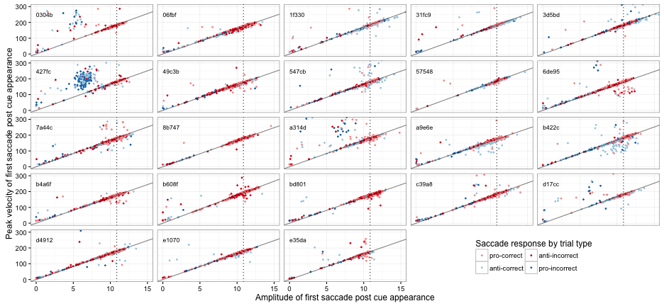
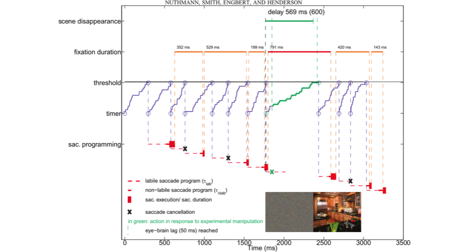
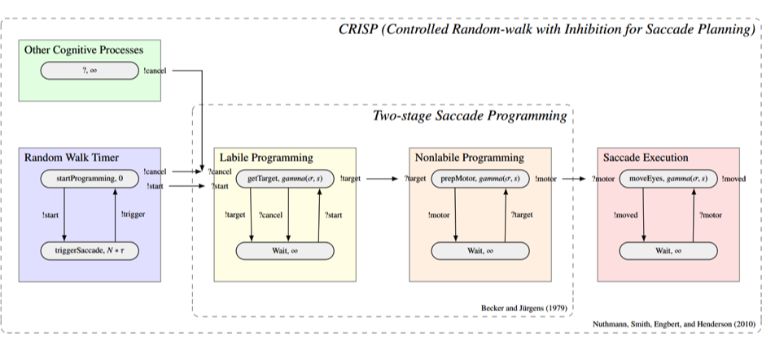
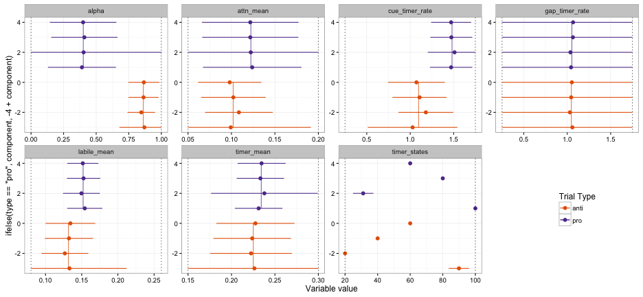

Cognitive control of eye movements
A model of voluntary and involuntary saccade generation
Ryan M. Hope
Rensselaer Polytechnic Institute
Introduction
Humans make on average 1-4 saccades every second
- thats 10s to 100s of thousands of saccades per day
- how many are deliberately planned?
Humans feel like they can VOLUNTARILY move their eyes:
- to any location
- at any time
Certain circumstances seem to produce INVOLUNTARY saccades
- involuntary saccades contradict top-down goals
- e.g. the sudden onset of the cue in the antisaccade task
The antisaccade task

Cutsuridis, V., Kumari, V., & Ettinger, U. (2014). Antisaccade performance in schizophrenia: A neural model of decision making in the superior colliculus. Frontiers in Neuroscience, 8(8 FEB), 1–13.
Overview
Purpose
- To better understand the top-down control mechanisms involved with eye movement control and how they interact with bottom-up control mechanisms
How
- Compare new computational model to healthy subjects
- Meeter's competitive integration in SC plus automatic saccade timing
- competitive integration guided by braver's DMC framework
Main results
- For the most part, both bottom-up and top-down control only affect the spatial compoent of saccade programming
- No direct top-down control over when the eyes move, only where
- The ability to change a bottom-up/top-down bias may explain individual and task related variations in performance
Short intersaccadic intervals

Overlapping saccades and glissades

Fixational eye movements (microsaccades)

Martinez-Conde, S., Macknik, S. L., Troncoso, X. G., & Hubel, D. H. (2009). Microsaccades: a neurophysiological analysis. Trends in Neurosciences, 32(9), 463–475.
Evidence supporting automatic saccade timing
corrective eye movements (aka glissades)
- short intersaccadic intervals
- no intersaccadic interval
- overlapping saccades
fixational eye movements (aka microsaccades)
- reduce image fading from photoreceptor fatigue
- possibly related to shifts of attention
- follows main-sequence
smooth pursuit
- lots of small regularly spaced unconscious saccades
The Experiment
Mixed-block antisaccade task
- 23 subjects
- 480 trials split by 12 blocks
- 20 anti / 20 pro per block
- Dropped all trials with blinks between fixation point offset and first saccade
- No specific instructions to prioritize saccade accuracy
- Subjects most likely though secondary task was primary task

Saccade response accuracy

Saccade latency

Saccade amplitude

Main sequence

Models & Simulations
The (C)ontrolled (R)andom-walk with (I)nhibition for (S)accade (P)lanning model

Nuthmann, A., Smith, T. J., Engbert, R., & Henderson, J. M. (2010). CRISP: a computational model of fixation durations in scene viewing. Psychological Review, 117(2), 382–405.
CRISP control mechanisms

CRISP DEVS (Discrete Event System Specification)

https://github.com/RyanHope/PyeMovements/blob/master/crisp.py
Attention Biased Saliency (ABS)-CRISP

The Models
Model variant conceptual differences
For the CRISP model, fixating is achieved via saccade cancellation.
For the ABS-CRISP, fixating is achieved via making a saccade of zero amplitude.
Model antisaccade task interaction
CRISP:
- possible cancellation at gap
- possible cancellation at cue
- rate change at gap
- rate change at cue
- getTarget() always returns Inf
ABS-CRISP:
- attention shift triggered at gap
- attention shift triggered at cue
- rate change at gap
- rate change at cue
- getTarget() weighted sum of saliency and attention map
- \[ TM = (\alpha) * AM + (1-\alpha) * SM \]
- AM and SM single floating point value (-Inf,Inf) centered at 0
- indicates horizontal position relative to fixation point
Model fitting/evaluation procedure
Model parameters
CRISP:
 617,400 combinations
617,400 combinations
ABS-CRISP:
 343,000 combinations
343,000 combinations
MindModeling@Home (Beta)
MindModeling@Home is volunteer computing pool dedicated to the advancement of cognitive science.
- Based in Dayton, OH at:
- The University of Dayton Research Institute
- Wright State University
- https://mindmodeling.org/
- Can run a year's worth of simulations in the matter of a few hours to a few days!
Powered by:
Parameter space evaluation
"model run" = 500 trials
KS test = Kolmogorov–Smirnov test
- One model run per parameter combination was dispatched out to volunteer computers
- For each model run:
- the resulting latency distribution (from the model) was compared to each of the 23 subjects data using a two-sample KS test
- the two-sample KS test scores from each subject (as well as the evaluated parameter values) were returned to the MindModeling servers
"good fitting models""

Simulation 1
Sim1 saccade latency (prosaccade trials)

Sim1 saccade latency (antisaccade trials)

Sim1 cluster analysis

Simulation 2
Sim2 saccade response accuracy

Sim2 saccade latency (prosaccade trials)

Sim2 saccade latency (antisaccade trials)

Sim2 cluster analysis

Conclusions
Results
- Further support of the idea that saccades are triggered automatically and rhythmically
- Shifts of attention don't directly trigger saccade programming
- No direct top-down control over when the eyes move
- Competitive integration of bottom-up and top-down spatial control signals in the SC provides most control
- Fixating is making really just making very tiny saccades
- The default mode of the SC is to be biased towards bottom-up information
- What ever is involved with shifting the bias towards top-down also seems to attenuate other bottom-up effects
- Individual differences seem to be related to the ability to shift the bias
- While shifing bias towards town-down is needed to over coming strong bottom-up signal, shifting bias towards bottom-up might be need to make covert attention shifts without producing eye movements
Limitations
No mechanism for what shifts the bias
- Could be related to "focusing" attention
- Might be yolked to shifts of attention
Amplitude predictions were horrible
- ABS-CRISP did produce partial amplitude saccades which is improvement over Meeter model
- SC likely takes multiple samples from the TM during the duration of the labile program
Assumed bottom-up and top-down signals had equal relative strengths and static over time